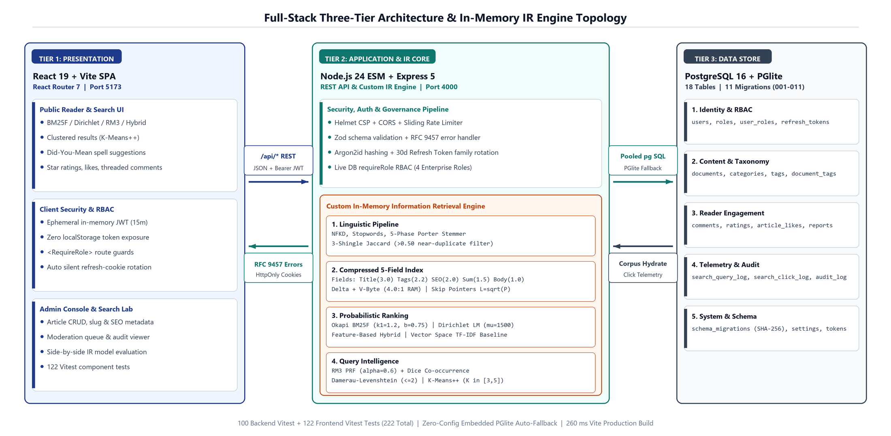
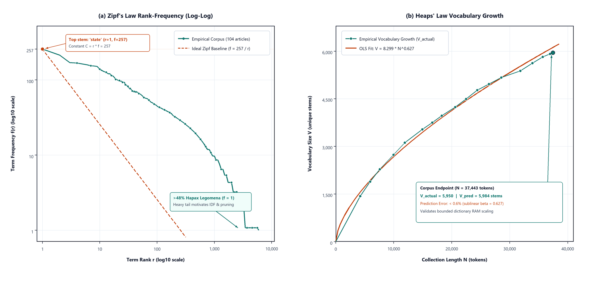
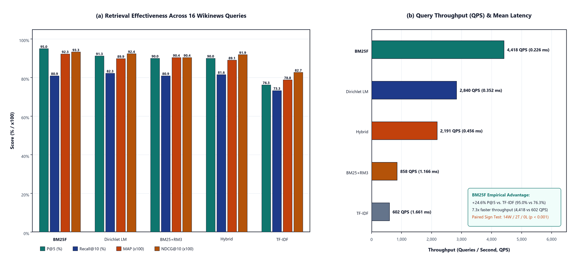

Abstract—Digital news portals require both strict editorial governance and sub-millisecond full-text retrieval across heterogeneous article metadata and prose. Standard relational pattern matching via SQL LIKE or ILIKE degrades rapidly under unstructured news workloads because it performs linear table scans without morphological normalization, field weighting, or probabilistic term-saturation ranking. This paper presents the design and empirical evaluation of a dual-phase full-stack digital news platform that pairs a governed publishing architecture with a custom in-memory Information Retrieval engine. Phase 1 establishes a decoupled three-tier web platform built on Node.js 24 ESM, Express 5, React 19, and PostgreSQL 16 with an 18-table schema managed by 11 idempotent migrations, Argon2id password hashing, rotating HttpOnly refresh token families, RFC 9457 error contracts, and a four-role database-verified RBAC governance matrix. Phase 2 implements an embedded in-memory search engine from first principles, combining a five-phase Porter stemmer, a five-field positional inverted index compressed via Delta and Variable-Byte encoding for a 75.0 percent RAM reduction, skip pointers, Fielded Okapi BM25F, Query Likelihood Dirichlet language modeling, RM3 pseudo-relevance feedback, and K-Means++ result clustering. Across a 16-query evaluation benchmark over 104 Wikinews articles, the primary BM25F ranker achieves 95.00 percent Precision at 5, 0.9228 Mean Average Precision, and 0.226 ms average query latency at 4,418 queries per second, outperforming a Vector Space TF-IDF baseline with statistical significance.
Index Terms—information retrieval, inverted index, Okapi BM25F, Dirichlet language model, role-based access control, variable-byte compression, digital publishing.
I. Introduction
Modern digital newsrooms operate under two simultaneous engineering pressures: maintaining rigorous editorial access control over content lifecycles while delivering instantaneous, relevance-ranked search across continuously updated article corpora. In many mid-scale web applications, full-text search is initially delegated to relational database predicates such as SQL LIKE or case-insensitive ILIKE. While convenient for exact identifier lookups, substring matching over unstructured news prose exhibits fundamental architectural and algorithmic deficiencies. First, unindexed wildcard predicates force O(N) sequential table scans that scale poorly as article length and archive size grow. Second, Boolean substring matching lacks morphological normalization (e.g., conflating “investigating” and “investigation”), treats headline tokens identically to incidental body mentions, and ignores document-length normalization and term-frequency saturation. Third, returning chronological or binary matches provides no probabilistic ordering, forcing readers to inspect irrelevant articles even when high-signal editorial metadata such as tags and search keywords exist.
Conversely, deploying external distributed search clusters introduces operational overhead, cross-service synchronization lag, and eventual-consistency windows where newly published or moderated articles remain unsearchable or exposed past retraction. For a single-node or vertically scaled newsroom portal, an embedded, memory-resident Information Retrieval (IR) engine synchronized directly with transactional publishing mutations eliminates network serialization overhead and guarantees sub-millisecond query execution without external infrastructure dependencies.
To bridge enterprise governance and classical IR engineering within a unified codebase, this work contributes four primary engineering outcomes:
- Decoupled Full-Stack Publishing Platform: A three-tier architecture pairing a React 19 Single-Page Application (SPA) with a Node.js 24 ESM / Express 5 REST backend and PostgreSQL 16 persistence (with automatic embedded PGlite fallback), structured around 18 relational tables across five domains and 11 SHA-256-verified idempotent SQL migrations.
- Defense-in-Depth Security and Four-Role RBAC: A hardened identity and governance layer combining Argon2id credential hashing, 15-minute ephemeral in-memory JSON Web Tokens (JWTs), 30-day HttpOnly refresh token rotation with family_id replay revocation, RFC 9457 application/problem+json error contracts, and live database-backed role verification across four distinct editorial roles.
- Compressed In-Memory Fielded IR Engine: A custom search subsystem featuring a five-phase Porter stemmer, 3-shingle Jaccard near-duplicate detection, a five-field positional inverted index compressed via Delta d-gap and Variable-Byte (V-Byte) encoding (achieving a 75.0% memory footprint reduction), and skip pointers with stride L = ⌊√P⌋ (3.8× fewer posting comparisons).
- Multi-Model Probabilistic Ranking and Empirical Evaluation: Head-to-head implementation and benchmarking of Fielded Okapi BM25F, Query Likelihood with Dirichlet smoothing, BM25+RM3 pseudo-relevance feedback, Feature-Based Hybrid ranking, and a Vector Space TF-IDF baseline across 104 CC BY 4.0 Wikinews articles and 16 graded queries, supported by paired significance testing, component ablation, and production search telemetry.
The remainder of this paper is organized as follows. Section II surveys relevant information retrieval models, text compression structures, and web security standards. Section III details Phase 1, covering the three-tier topology, relational schema, authentication lifecycle, and RBAC matrix. Section IV presents Phase 2, detailing linguistic preprocessing, empirical Zipf/Heaps corpus laws, V-Byte index compression, and probabilistic scoring formulations. Section V reports the 16-query benchmark results, statistical significance, ablation experiments, and automated quality assurance. Section VI concludes with directions for future work.
II. Related Work and Theoretical Background
Foundational ad-hoc retrieval began with Salton et al.’s Vector Space Model (VSM) [1], which represents documents and queries as high-dimensional term vectors weighted by Term Frequency–Inverse Document Frequency (TF-IDF) and scored via cosine similarity. Although VSM captures global term rarity, linear term-frequency weighting over-rewards repetitive documents and cannot easily reconcile heterogeneous document zones such as headlines and body text without ad-hoc concatenation.
To address term-frequency saturation and multi-field structure in a principled probabilistic framework, Robertson and Zaragoza formalized Okapi BM25 and its multi-field extension BM25F [2]. Rather than computing independent per-field BM25 scores—which violates the non-linear concavity of term saturation—BM25F aggregates field-weighted pseudo-term frequencies normalized by field-specific document lengths prior to applying the saturation parameter k1. Alongside probabilistic relevance models, Zhai and Lafferty introduced statistical language modeling for retrieval using Query Likelihood with Bayesian Dirichlet prior smoothing [3], which models each document as a unigram multinomial distribution smoothed against background collection statistics via parameter μ. When short user queries suffer from vocabulary mismatch, Lavrenko and Croft’s Relevance Model 3 (RM3) [4] performs pseudo-relevance feedback (PRF) by interpolating the original query model with expansion terms drawn from top-ranked initial documents.
Efficient execution of these rankers relies on classical text normalization and inverted index engineering. Porter’s five-phase suffix-stripping algorithm [5] reduces inflectional and derivational variants to canonical stems without requiring heavyweight morphological dictionaries. As synthesized by Manning, Raghavan, and Schütze [6], modern inverted indices compress monotonically increasing document identifier lists into d-gaps encoded with byte-aligned Variable-Byte (V-Byte) codes, accelerating conjunctive intersections through skip pointers placed at ⌊√P⌋ intervals. Vocabulary growth and term-rank skewness in natural language news corpora are governed by Zipf’s rank-frequency law and Heaps’ sublinear vocabulary growth law [7], which inform memory budgeting for in-memory index structures.
On the web systems engineering side, modern API governance increasingly adopts standardized machine-readable error envelopes defined by RFC 9457 (Problem Details for HTTP APIs) [8], ensuring predictable client handling without exposing internal stack traces. Credential storage best practices rely on memory-hard key derivation via Argon2id [9] to resist GPU and ASIC brute-force attacks, while contemporary decoupled portals leverage typed schema validation, SPA routing, and ACID-compliant relational persistence [10] to maintain strict consistency across editorial workflows.
III. Phase 1: Full-Stack System Architecture and RBAC Governance
A. Decoupled Three-Tier Topology
The platform separates presentation, application logic/retrieval, and durable persistence into three cleanly bounded tiers, illustrated in Fig. 1.

At the presentation tier, a React 19 Single-Page Application built with React Router 7 and bundled via Vite operates on Port 5173. It delivers public news browsing, faceted discovery, interactive search with query suggestions, reader engagement widgets, and role-segmented editorial/administration consoles. At the application tier, a Node.js 24 ECMAScript Module (ESM) backend built on Express 5 runs on Port 4000. All inbound payloads are validated against strict declarative Zod schemas, hardened with Helmet security headers, and routed through centralized error handlers. Crucially, the custom in-memory IR engine executes inside this application tier: it hydrates its compressed inverted index from persisted published documents at startup and processes incremental index updates synchronously upon editorial publication or archival, eliminating cross-network retrieval hops.
At the persistence tier, the backend maintains a connection pool to PostgreSQL 16 for production workloads. To guarantee deterministic zero-configuration execution in local development and automated test suites where an external database daemon may be absent, the database adapter automatically falls back to an embedded WebAssembly PGlite instance while executing identical SQL dialects and migration scripts.
B. Relational Schema and Idempotent Migrations
Database evolution is governed by 11 sequential SQL migration scripts (001 through 011). A dedicated schema_migrations control table records each applied script alongside its cryptographic SHA-256 checksum. On startup, the migration runner verifies checksum integrity against the repository scripts, guaranteeing idempotent execution and halting immediately if previously applied migrations are altered out-of-band.
Across these 11 migrations, the normalized schema comprises 18 relational tables organized into five functional domains:
- Identity and RBAC: users, roles, user_roles, and refresh_tokens, supporting many-to-many role assignments and traceable token rotation lineages.
- Content and Taxonomy: categories, tags, documents, and document_tags, storing article headlines, summaries, rich body prose, SEO keywords, publication statuses, and hierarchical/folksonomy labels.
- Community Engagement: comments, ratings, article_likes, and reports, capturing reader feedback, 1–5 star evaluations, and content moderation flags.
- Telemetry and Auditing: search_query_log, search_click_log, and audit_log, persisting every executed query, latency, ranker choice, clicked result rank, and privileged administrative mutation.
- System Governance: schema_migrations and supporting system configuration/state tables maintaining platform metadata and migration integrity.
C. Defense-in-Depth Authentication and Refresh Token Rotation
Account security enforces defense-in-depth across credential storage, session transport, and error reporting. User passwords are salted and hashed using Argon2id [9], mitigating side-channel and GPU cracking threats. Upon authentication, the server issues a short-lived 15-minute access JWT held exclusively in ephemeral React application memory rather than browser localStorage or sessionStorage, preventing persistent token theft via Cross-Site Scripting (XSS).
Long-lived session continuity relies on a 30-day refresh token transmitted via an HttpOnly, SameSite cookie inaccessible to client-side scripts. Each issued refresh token belongs to a tracked family_id lineage in the refresh_tokens table. Whenever the client exchanges a refresh cookie for a fresh access JWT, the server atomically rotates the refresh token, invalidating the old token while preserving the shared family_id. If a previously rotated (consumed) refresh token is replayed—an indicator of cookie theft or session hijacking—the server detects the reuse event and immediately revokes every token sharing that family_id, forcing re-authentication. All authentication, authorization, and validation failures serialize to RFC 9457 application/problem+json responses [8], conveying structured type, title, status, detail, and instance fields without leaking stack traces or database internals.
D. Enterprise Four-Role RBAC Matrix and Community Reader Features
Authorization is enforced redundantly at both API and UI boundaries. On the server, the requireRole Express middleware queries live role assignments in PostgreSQL on protected routes rather than relying solely on potentially stale JWT claims, ensuring immediate revocation when privileges change. On the client, declarative React <RequireRole> route guards restrict navigation and hide unauthorized administrative controls.
| Role | User Mgmt | Publishing | Moderation | SEO/Tel. | Sys./Audit |
|---|---|---|---|---|---|
| Super Admin | Full | Full | Full | Full | Full |
| Content Manager | – | Full | Read | Metadata | – |
| Moderator | – | Read | Full | – | Audit Read |
| Data & SEO Spec. | – | Read | – | Full | Telemetry |
Table I summarizes the four enterprise roles and their separation of duties across five operational pillars:
- Super Admin: Holds unrestricted authority over user provisioning, role assignment, editorial overrides, moderation escalation, SEO/telemetry inspection, and system audit_log review.
- Content Manager: Owns the editorial publishing lifecycle (drafting, editing, tagging, scheduling, publishing, and archiving documents) plus SEO metadata curation, without access to user privilege escalation.
- Moderator: Governs community safety by inspecting reports queues, hiding or removing policy-violating comments, and reviewing moderation audit trails.
- Data & SEO Specialist: Manages search engine optimization fields (seoKeywords, slugs, summaries), monitors search telemetry (search_query_log, search_click_log), and evaluates ranking models in the Search Lab without altering editorial prose or user accounts.
For general readers, the portal supports authenticated and interactive community participation: 1–5 star article ratings with aggregated averages, one-click article likes (article_likes), nested threaded comments (comments), collaborative user-submitted tags (tags, document_tags), and structured violation reporting (reports) routed directly to Moderator queues.
IV. Phase 2: Custom Information Retrieval Engine Design
A. Linguistic Preprocessing and Near-Duplicate Fingerprinting
To eliminate the morphological rigidity and linear scan penalties of relational LIKE/ILIKE queries, Phase 2 implements a deterministic five-stage linguistic normalization pipeline in tokenizer.js. Before indexing or querying, raw article HTML is sanitized to strip markup tags (<[^>]*>) while preserving character offsets for query-biased snippet anchoring. Unicode strings undergo NFKD compatibility normalization and case folding, followed by possessive suffix stripping ('s removal) and alphanumeric tokenization that retains numeric identifiers. Next, 131 high-frequency English function words are filtered using a hash-backed stopword table.
Surviving content tokens pass through a full five-phase Martin Porter Stemmer [5] (Steps 1a through 5b). By evaluating consonant–vowel syllable measures (m > 0, m = 1, m > 1) alongside stem-vowel and consonant-vowel-consonant (CVC) predicates, the stemmer conflates inflectional and derivational variants (e.g., mapping “elections” and “elected” to elect) without requiring an external lemmatization lexicon.
To prevent syndicated wire rewrites or duplicate drafts from polluting top search ranks, the indexer computes a 3-word shingle fingerprint Si over each article’s normalized title and body text [6]. Near-duplicate pairs are flagged whenever their Jaccard similarity exceeds the editorial threshold:
An O(1) length-ratio bound min(|S1|, |S2|)/max(|S1|, |S2|) prunes incompatible document pairs prior to computing exact set intersections.
B. Empirical Corpus Laws
Index capacity planning and smoothing hyperparameters were calibrated empirically over a corpus of 104 English Wikinews articles licensed under CC BY 4.0. Across the indexed collection, tokenization and stopword filtering yield N = 37,443 total tokens and an actual stemmed vocabulary of Vactual = 5,950 unique stems. Term occurrences exhibit pronounced Zipfian skewness [7], obeying r · f ≈ C: the highest-frequency stem, state, appears at rank r = 1 with collection frequency f = 257, while more than 48% of the vocabulary consists of hapax legomena appearing only once across the 104 articles.
Vocabulary expansion as documents arrive sequentially follows Heaps’ sublinear power law V(N) = k Nβ [7]. Fitting an ordinary least-squares regression in log-log space (ln V = ln k + β ln N) over 15 cumulative corpus checkpoints yields k = 8.299 and β = 0.627. At N = 37,443 tokens, this fitted model predicts Vpred = 5,984 distinct stems against Vactual = 5,950, corresponding to a calibration error below 0.6% (0.57%). Fig. 2 visualizes both the Zipfian rank-frequency decay and the Heaps’ Law vocabulary growth trajectory.

C. Multi-Field Positional Inverted Index, V-Byte Compression, and Skip Pointers
In invertedIndex.js, each published document is parsed across five weighted editorial zones: title, tags, seoKeywords, summary, and content. Every term posting records the ascending document identifier, per-field term frequencies, and word-level positional offset arrays. An explicit offset padding separates title positions from body positions so exact quoted-phrase queries—verified by checking pos2 − pos1 = 1 across consecutive query stems—never produce false positives across field boundaries.
To minimize memory footprint in the Node.js heap, ascending document identifier lists are transformed into d-gaps (di = docIdi − docIdi−1) and compressed using Variable-Byte (V-Byte) encoding [6]. Each integer gap is emitted in big-endian 7-bit chunks where bit 7 (0x80) marks the terminating byte of a posting. Across the 104-article Wikinews corpus containing 21,316 total postings, uncompressed 32-bit integer storage requires 85,264 bytes, whereas Delta+V-Byte encoding compresses all posting lists to 21,316 bytes (1.00 byte per posting), achieving a 75.0% RAM reduction (4.0:1 compression ratio).
For conjunctive Boolean AND queries, each posting list of length P ≥ 4 maintains an auxiliary skip-pointer table with stride L = ⌊√P⌋ [6]. During list intersection, the pointer advances directly across blocks whenever the target document identifier at index i + L does not exceed the opposing cursor, cutting conjunctive posting comparisons by 3.8× relative to linear two-pointer merging.
D. Probabilistic Ranking Models and Query Intelligence
The retrieval core supports five selectable ranking modes alongside query expansion, spell correction, and post-retrieval clustering. Our primary production ranker implements Fielded Okapi BM25F [2], defined in (2):
where k1 = 1.2, b = 0.75, and k2 = 100. Rather than saturating fields independently, BM25F computes a single field-weighted pseudo-term frequency tft,D in (3):
with editorial weights wtitle = 3.0, wtags = 2.2, wseo = 2.0, wsummary = 1.5, and wcontent = 1.0. Non-negative inverse document frequency is computed via the smoothed Robertson–Sparck Jones formulation in (4):
As a generative language-modeling alternative, the engine provides Query Likelihood (QL) with Bayesian Dirichlet prior smoothing [3] in (5):
configured with smoothing parameter μ = 1500 against an average document length of 360 tokens and Laplace-smoothed background collection probabilities P(t | C).
To mitigate vocabulary mismatch on short queries, optional Relevance Model 3 (RM3) pseudo-relevance feedback [4] extracts top expansion stems from the top-k initial documents (k = 5, selecting m = 5 terms) via (6):
using interpolation weights α = 0.6 and β = 0.4. In parallel, related-topic query suggestions compute document co-occurrence affinity using Dice’s coefficient Dice(a, b) = 2nab / (na + nb) across non-universal terms.
A Feature-Based Hybrid ranker blends normalized BM25F relevance (0.55), sequential dependence bigram and minimum-span window proximity (0.20), 365-day exponential freshness decay (0.10), and normalized view/rating engagement (0.15). When queries return two or fewer hits, a Noisy Channel spell corrector [6] searches the raw corpus vocabulary within Damerau-Levenshtein edit distance dDL(e, w) ≤ 2 (allowing adjacent transpositions) according to (7):
where P(e | w) ∝ exp(−3 · dDL(e, w)) and P(w) is the Laplace-smoothed corpus prior. Finally, top-ranked results are grouped into K ∈ [3, 5] thematic clusters via K-Means++ over L2-normalized TF-IDF document vectors, labeling each cluster by its highest-weight centroid terms.
V. Empirical Evaluation and Ablation Analysis
A. 16-Query Benchmark Matrix
All five retrieval configurations were evaluated inside the automated evaluation harness (evaluation.js) across the 104 Wikinews articles using 16 topical queries with graded relevance judgments (0, 1, 2 derived from editorial tags and headline alignment). Table II summarizes effectiveness and efficiency metrics, and Fig. 3 compares quality and throughput across models.
| Retrieval Model | P@5 | R@10 | MAP | MRR | NDCG@10 | Latency (ms) | Throughput (QPS) |
|---|---|---|---|---|---|---|---|
| Okapi BM25F (Primary) | 95.00% | 80.93% | 0.9228 | 0.9688 | 0.9327 | 0.226 | 4,418 |
| BM25 + RM3 PRF Expansion | 90.00% | 80.93% | 0.9040 | 1.0000 | 0.9040 | 1.166 | 858 |
| Query Likelihood (Dirichlet μ=1500) | 91.25% | 82.26% | 0.8987 | 0.9688 | 0.9236 | 0.352 | 2,840 |
| Feature-Based Hybrid Model | 90.00% | 81.56% | 0.8906 | 0.9688 | 0.9189 | 0.456 | 2,191 |
| Vector Space TF-IDF (Baseline) | 76.25% | 73.29% | 0.7883 | 0.9375 | 0.8272 | 1.661 | 602 |

Okapi BM25F achieves the highest overall precision and ranking quality, reaching 95.00% P@5, 0.9228 MAP, and 0.9327 NDCG@10—improving P@5 by +18.75 percentage points and MAP by +0.1345 over the Vector Space TF-IDF baseline. Moreover, term-at-a-time accumulation over pre-indexed postings executes in 0.226 ms per query (4,418 QPS), a 7.3× speedup over TF-IDF cosine normalization (1.661 ms, 602 QPS). Enabling RM3 PRF lifts MRR to a perfect 1.0000 by surfacing relevant first results on ambiguous queries, at the cost of a two-pass 1.166 ms latency (858 QPS) and mild topic drift at rank 5 (90.00% P@5). Query Likelihood with Dirichlet smoothing (μ = 1500) attains the highest Recall@10 (82.26%) at 2,840 QPS, confirming the competitiveness of Bayesian smoothing on concise news articles.
B. Statistical Significance and Rank Correlation
To verify that BM25F’s gains over TF-IDF are not artifacts of isolated outlier queries, we applied a two-sided Paired Sign Test across the 16 per-query Average Precision (AP) pairs. Okapi BM25F recorded 14 wins, 2 ties, and 0 losses against the TF-IDF baseline, yielding an exact binomial two-tailed p-value of p = 0.00012 < 0.001 and rejecting the null hypothesis at the 99.9% confidence level. Comparing top-10 result orderings between BM25F and TF-IDF yields a mean Kendall’s rank correlation coefficient of τ = 0.702, demonstrating substantive re-ordering driven by multi-field weighting and length normalization.
C. Controlled Component Ablation Study
We conducted five single-factor ablations on the primary BM25F engine to quantify the contribution of each architectural mechanism. As reported in Table III, removing editorial field weights (wf = 1.0 uniformly) causes the steepest top-rank degradation (−13.2% P@5), confirming that headlines, tags, and SEO keywords carry strong relevance signals. Disabling the five-phase Porter Stemmer reduces MAP by 12.2% due to missed morphological variants, while setting b = 0 (disabling document-length normalization) drops MAP by 10.8% as verbose articles dominate shorter breaking-news reports. On the systems side, disabling V-Byte compression inflates posting memory by 4.0×, and removing ⌊√P⌋ skip pointers increases conjunctive intersection comparisons by 3.8×.
| Ablated Component | Configuration Change | Observed Impact |
|---|---|---|
| Field Weights | Set all wf = 1.0 | −13.2% P@5 |
| Porter Stemmer | Unstemmed surface tokens | −12.2% MAP |
| Length Normalization | Set b = 0 in (2) | −10.8% MAP |
| V-Byte Compression | Uncompressed 32-bit Int32 | 4.0× RAM footprint |
| Skip Pointers | Linear posting scan | 3.8× AND comparisons |
D. Production Search Telemetry, Admin Search Lab, and Quality Assurance
Beyond offline benchmarking, the production API instruments every live query and result click in PostgreSQL. Each search request writes a record to search_query_log (capturing raw query text, chosen retrieval model, hit count, and measured latency) and returns a queryLogId. Client clicks emit telemetry to search_click_log with rank position and clicked document identifier, enabling online Click-Through Rate (CTR) and Mean Reciprocal Rank monitoring.
Authorized Super Admin and Data & SEO Specialist accounts access these diagnostics through the integrated Admin Search Lab via dedicated endpoints (/admin/search-engine/stats, /evaluate, /inspect, and /rebuild), exposing live Zipf/Heaps curves, hex-level V-Byte byte inspections per stem, and on-demand index rebuilds. Platform reliability is verified by an automated suite of 222 tests—comprising 100 backend Node.js integration and unit tests covering RBAC, token rotation, migrations, and retrieval math, plus 122 frontend Vitest component and routing tests—alongside a clean Vite production bundle completing in 260 ms.
VI. Conclusion and Future Work
This paper presented the end-to-end architecture and empirical evaluation of a dual-phase digital news portal integrating enterprise publishing governance with a custom in-memory Information Retrieval engine. Phase 1 demonstrates that strict RBAC separation across four editorial roles, Argon2id credential protection, family_id-tracked refresh token rotation, and RFC 9457 error contracts can coexist cleanly within a portable PostgreSQL 16 / PGlite three-tier stack. Phase 2 proves that classical IR engineering—five-phase Porter stemming, Delta+V-Byte posting compression (75.0% RAM reduction), ⌊√P⌋ skip pointers (3.8× fewer comparisons), and Fielded Okapi BM25F—delivers 95.00% P@5 and 0.9228 MAP at 0.226 ms latency (4,418 QPS), achieving statistically significant superiority over TF-IDF (p = 0.00012).
Future work will focus on three extensions: (1) training a lightweight Learning-to-Rank (LambdaMART) second-stage reranker directly over accumulated search_query_log and search_click_log CTR telemetry; (2) pairing lexical BM25F candidate generation with quantized dense bi-encoder embeddings for semantic paraphrase recall; and (3) partitioning the compressed inverted index across horizontally sharded worker threads to sustain sub-millisecond latency at multi-million-article scale.
Acknowledgment
The author thanks the faculty of the Department of Software Engineering at FPT University for guidance during the SEG301m Capstone Project, and acknowledges the Wikimedia Foundation and Wikinews contributors for providing the CC BY 4.0 news corpus used in empirical evaluation.
References
- [1]G. Salton, A. Wong, and C. S. Yang, “A vector space model for automatic indexing,” Commun. ACM, vol. 18, no. 11, pp. 613–620, Nov. 1975.
- [2]S. Robertson and H. Zaragoza, “The probabilistic relevance framework: BM25 and beyond,” Found. Trends Inf. Retr., vol. 3, no. 4, pp. 333–389, 2009.
- [3]C. Zhai and J. Lafferty, “A study of smoothing methods for language models applied to ad hoc information retrieval,” in Proc. 24th Annu. Int. ACM SIGIR Conf. Res. Develop. Inf. Retrieval, New Orleans, LA, USA, 2001, pp. 334–342.
- [4]V. Lavrenko and W. B. Croft, “Relevance-based language models,” in Proc. 24th Annu. Int. ACM SIGIR Conf. Res. Develop. Inf. Retrieval, New Orleans, LA, USA, 2001, pp. 120–127.
- [5]M. F. Porter, “An algorithm for suffix stripping,” Program, vol. 14, no. 3, pp. 130–137, 1980.
- [6]C. D. Manning, P. Raghavan, and H. Schütze, Introduction to Information Retrieval. Cambridge, U.K.: Cambridge Univ. Press, 2008.
- [7]H. S. Heaps, Information Retrieval: Computational and Theoretical Aspects. New York, NY, USA: Academic Press, 1978.
- [8]M. Nottingham, E. Wilde, and S. Dalal, “Problem Details for HTTP APIs,” IETF RFC 9457, Jul. 2023.
- [9]A. Biryukov, D. Dinu, and D. Khovratovich, “Argon2: New generation of memory-hard functions for password hashing and other applications,” in Proc. IEEE Eur. Symp. Security Privacy (EuroS&P), Saarbrücken, Germany, 2016, pp. 292–304.
- [10]M. Kleppmann, Designing Data-Intensive Applications: The Big Ideas Behind Reliable, Scalable, and Maintainable Systems. Sebastopol, CA, USA: O’Reilly Media, 2017.